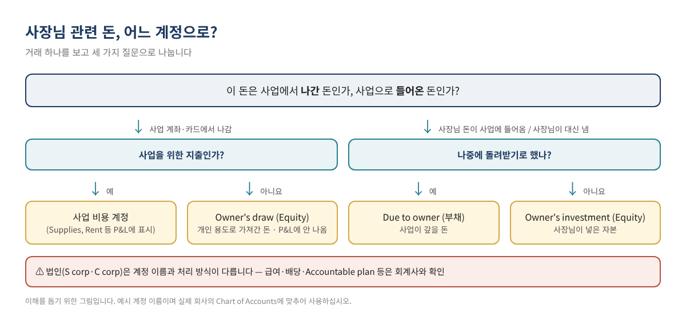
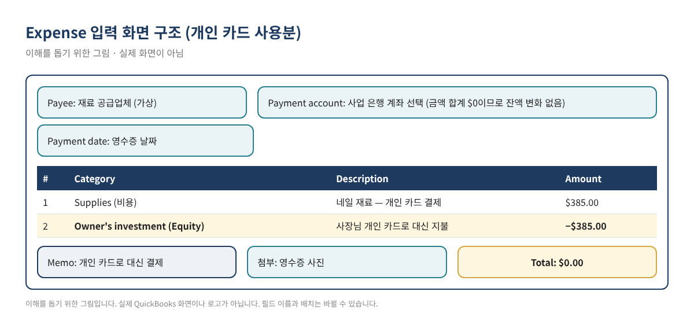
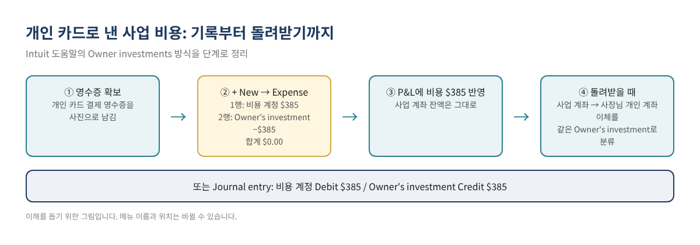
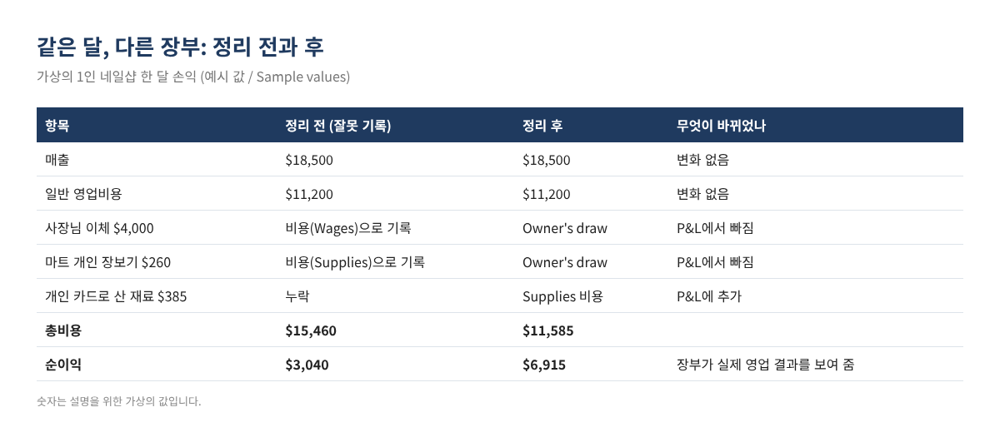

월말에 손익계산서(P&L)를 열었더니 이익이 생각보다 훨씬 적게 나오는 경우가 있습니다. 원인을 따라가 보면 사장님이 생활비로 가져간 돈이 "Wages"나 "Office expenses"로 분류되어 있고, 마트에서 집 장을 본 금액이 사업 비용 속에 섞여 있습니다. 반대로 사장님 개인 카드로 산 재료비는 장부 어디에도 없어서, 실제로 쓴 비용이 빠져 있기도 합니다.
이 글은 QuickBooks Online(QBO)에서 사장님과 사업 사이를 오가는 돈을 기록하는 방법을 정리합니다. 사업 계좌에서 사장님이 가져간 돈(Owner's draw), 사업 계좌·카드로 낸 개인 지출, 그리고 사장님 개인 카드나 개인 계좌로 대신 낸 사업 비용과 그 비용을 돌려받는 과정까지 단계별로 다룹니다. 시리즈 첫 글 QuickBooks Online 기초 가이드에서 짧게 언급한 내용을 자세히 풀어 쓴 글이며, 은행 연결과 Match·Add·Rule 글을 먼저 읽어 두시면 이해가 빠릅니다.
이런 분께 필요합니다 ☐ 사업 계좌에서 생활비를 이체해 쓰고 있는데 어떻게 분류해야 할지 모르는 분 ☐ 사업 카드로 개인 물건을 산 적이 있는 분 ☐ 급할 때 개인 카드로 사업 재료나 소모품을 산 분 ☐ P&L의 이익이 실제 장사와 맞지 않는다고 느끼는 분 ☐ 연말에 회계사에게 "사장님 돈이 섞여 있다"는 말을 들은 분
Intuit의 도움말은 Owner's draw 계정을, 사장님에게 지급하기 위해 회사 자산을 꺼낸 것을 추적하는 자본(Equity) 계정으로 설명합니다. 비용 계정이 아니기 때문에 P&L에는 나타나지 않고, 대차대조표(Balance Sheet)의 자본 부분에서 자본을 줄이는 항목으로 보입니다. 사장님이 가져간 돈을 비용으로 넣으면 이익이 실제보다 작게 보이고, 사업이 얼마나 잘되고 있는지 판단하기 어려워집니다.
IRS의 Publication 583(Rev. 12-2024)은 사업을 시작할 때 사업용 당좌 계좌를 따로 열고, 개인 계좌와 분리해 사업에만 쓰라고 안내합니다. 개인 용도로 돈을 꺼낼 때는 본인 앞으로 수표를 쓰는 식으로 기록을 남기라는 예도 듭니다. Intuit의 개인 자금 관련 도움말도 첫머리에서 사업 자금과 개인 자금을 섞지 말 것을 권합니다. 아래 방법들은 그래도 섞인 거래가 생겼을 때 장부를 바르게 남기는 방법입니다.
팁 계정 이름은 회사마다 조금씩 다릅니다. "Owner's draw", "Owner draws", "Partner distributions", "Owner investments", "Owner's investment" 등 QBO가 기본으로 만든 이름이나 회계사가 정한 이름을 그대로 쓰시고, 같은 성격의 계정을 두 개 만들지 않도록 주의하십시오.
사장님이 돈을 가져가는 방식은 사업 형태에 따라 다릅니다. Intuit의 "What is equity?" 도움말과 IRS의 "Paying yourself" 페이지를 바탕으로 정리하면 아래와 같습니다. LLC는 세금상 어떤 형태로 분류되는지에 따라 달라지므로, 본인 LLC가 어느 쪽에 해당하는지는 회계사와 확인하십시오.
| 사업 형태 | 사장님이 돈을 가져가는 방식 | QBO에서 흔히 쓰는 계정 | 주의할 점 |
|---|---|---|---|
| 개인사업자(Sole proprietor) | Owner's draw | Owner's draw, Owner investments (Equity) | Intuit 도움말은 개인사업자 본인을 Payroll 급여로 지급하지 말고 Owner's draw로 처리하라고 안내합니다. |
| 파트너십(Partnership) | 분배(Distribution), Guaranteed payment | Partner distributions, Partner contributions (Equity) | IRS는 파트너가 직원이 아니며, 분배나 guaranteed payment에 대해 W-2를 받지 않고 Schedule K-1로 보고된다고 설명합니다. |
| S corporation | 임원 급여(W-2) + 분배 | 급여는 Payroll 비용, 분배는 Distributions 계정 | IRS는 주주 겸 직원에게 분배 전에 합리적인 급여(reasonable compensation)를 지급해야 한다고 안내합니다. |
| C corporation | 임원 급여(W-2), 배당(Dividend) | 급여는 Payroll 비용, 배당은 Dividends/Retained earnings | 임원은 일반적으로 직원이며, 회사가 임원에게 빌려준 돈은 정식 대출 조건을 갖추지 않으면 다른 성격으로 볼 수 있다고 IRS는 설명합니다. |
S corporation이나 C corporation이라면 사장님 본인의 급여를 외부 급여 서비스로 처리하는 경우가 많습니다. 이 경우 기록 방법은 외부 Payroll을 QBO에 기록하는 Payroll clearing 방법 글을 참고하십시오. 이 글의 나머지 부분은 개인사업자와 파트너십처럼 Owner's draw를 쓰는 경우를 중심으로 설명합니다.
거래 하나를 볼 때마다 아래 순서로 질문하면 대부분 분류가 정해집니다.

Chart of Accounts에 Owner's draw 계정이 이미 있는지 먼저 확인합니다. 새 회사 파일에는 기본으로 만들어져 있는 경우가 많습니다.
계정 과목 전체 구성은 기초 잔액과 Chart of Accounts 세팅 글에서 자세히 다루었습니다.
Intuit 도움말은 개인사업자의 경우 Payroll을 거치지 않은 일반 수표(Check)를 쓰고, 계정을 Owner's draw 계정으로 지정하라고 안내합니다. + New → Check(또는 Expense)를 열어 지급 계좌로 사업 은행 계좌를, Category로 Owner's draw를 고르고 금액을 넣으면 됩니다. 이후 은행 피드에 같은 거래가 들어오면 새로 추가하지 말고 Match로 연결해 중복을 막습니다.
사업 카드로 집 장보기를 하거나 개인 통신비를 사업 계좌에서 낸 경우입니다. 이런 거래를 은행 피드에서 Exclude로 빼 버리고 싶을 수 있지만, Intuit 도움말은 개인 지출은 제외하지 말고 장부에 추가해서 계좌 잔액이 은행 명세서와 맞도록 하라고 권합니다. 이때 쓰는 계정이 Owner's draw입니다. Exclude한 거래는 어떤 계좌 기록이나 리포트에도 나타나지 않으므로, 실제로 돈이 나간 거래를 제외하면 QBO의 계좌 잔액과 은행 잔액이 어긋나 Reconcile이 맞지 않게 됩니다.
| 상황 | 잘못된 처리 | 바른 처리 |
|---|---|---|
| 사업 카드로 마트 개인 장보기 | Supplies 비용으로 분류 / Exclude | Owner's draw로 분류해 추가 |
| 사업 계좌에서 개인 신용카드 대금 납부 | Credit card 비용으로 분류 | Owner's draw로 분류 |
| 사업 계좌에서 사장님 개인 계좌로 이체 | Wages 또는 Transfer(사업 계좌 간 이체처럼)로 분류 | Owner's draw로 분류 (개인사업자 기준) |
| 은행 피드에 같은 거래가 두 번 들어옴 | 둘 다 Owner's draw로 추가 | 하나만 기록하고 중복은 Exclude |
Exclude는 은행 피드에 잘못 두 번 들어온 거래처럼 실제로 일어나지 않은 거래에 쓰는 기능입니다. 중복 거래 찾는 법은 중복 거래와 Reconcile 차이 찾기 글을, 이미 잘못 분류한 거래를 고치는 법은 잘못 입력한 거래 고치기 글을 참고하십시오.
사장님 개인 카드로 산 재료는 사업 계좌를 거치지 않기 때문에 은행 피드에 나타나지 않습니다. 따로 기록하지 않으면 비용이 빠집니다. Intuit 도움말은 두 가지 방법을 안내합니다.
+ New → Journal entry에서 첫째 줄에 비용 계정과 금액을 Debits에, 둘째 줄에 Owner investments와 같은 금액을 Credits에 넣고 저장합니다. 여러 건을 한 번에 넣을 때 편리합니다. 여러 줄을 한꺼번에 재분류해야 한다면 Journal entry로 일괄 재분류하기 글도 도움이 됩니다.

사업 계좌에서 사장님 개인 계좌로 그 금액을 돌려받았다면, 그 이체를 같은 Owner investments 계정으로 분류합니다. 은행 피드에서 분류하거나 Check·Expense로 입력할 수 있습니다. 이렇게 하면 넣은 돈과 돌려받은 돈이 같은 계정에서 상계되고, 비용은 한 번만 기록됩니다. 돌려받은 이체를 다시 Supplies 같은 비용으로 분류하면 같은 비용이 두 번 잡히니 주의하십시오.
Intuit의 "What is equity?" 도움말은 사장님이 대신 낸 비용을 사업이 갚을 계획이라면 "Loan from owner"나 "Due to owner" 같은 부채로, 갚지 않기로 하면 자본으로 다시 분류하는 방식도 소개합니다. 어느 방식을 쓸지는 회계사와 정해서 한 가지로 통일하는 것이 좋습니다.

법인이라면 S corporation이나 C corporation에서 사장님은 보통 회사의 직원(임원)입니다. IRS Publication 463은 회사가 직원의 비용을 돌려줄 때 Accountable plan의 요건(사업 관련성, 기한 내 증빙 제출, 초과분 반환)을 갖추지 못하면 그 금액이 W-2 급여에 포함된다고 설명합니다. 법인에서 대신 낸 비용을 돌려받는 방식은 회계사와 먼저 정하십시오.
가상의 개인사업자 네일샵 "Sunny Nail Studio"(실제 업체 아님)의 한 달 장부를 예로 들어 보겠습니다. 이 달에 정리가 필요한 거래는 세 건입니다.
| 거래 (예시 값 / Sample values) | 금액 | 처음 기록 | 바르게 고친 기록 |
|---|---|---|---|
| 사업 계좌 → 사장님 개인 계좌 이체 (생활비) | $4,000 | Wages 비용 | Owner's draw |
| 사업 카드로 마트 개인 장보기 | $260 | Supplies 비용 | Owner's draw |
| 사장님 개인 카드로 산 네일 재료 | $385 | 기록 없음 | Expense: Supplies $385 / Owner investments −$385 |
| 다음 달 사업 계좌에서 재료비 돌려받기 | $385 | - | Owner investments로 분류 (비용 아님) |
이 달 매출은 $18,500, 다른 영업비용은 $11,200이었습니다. 처음 기록에서는 총비용이 $11,200 + $4,000 + $260 = $15,460이 되어 순이익이 $3,040으로 보였습니다. 바르게 고치면 총비용은 $11,200 + $385 = $11,585, 순이익은 $6,915입니다. 사장님이 가져간 $4,260은 P&L이 아니라 대차대조표의 Owner's draw에 남고, 재료비 $385는 돌려받은 뒤 Owner investments 계정이 0으로 상계됩니다.

Owner's draw는 비용이 아니라 자본 계정이라서 P&L에 나타나지 않습니다. 세금 신고는 사업 형태별 규칙을 따르므로, 개별 상황은 회계사와 확인하십시오.
개인사업자라면 Intuit 도움말이 안내하듯 Owner's draw로 처리합니다. 정기적으로 가져가도 성격은 같습니다. S corporation이라면 IRS가 분배 전에 합리적인 급여를 지급해야 한다고 안내하므로 사정이 다릅니다.
Intuit 도움말은 여러 건이 담긴 명세서를 올리고 필요 없는 줄을 지우는 방식이나, Journal entry 한 건에 여러 줄을 넣는 방식을 안내합니다. 어떤 방식이든 각 비용의 영수증은 따로 보관하십시오.
매출(Income)이 아니라 Owner investments(갚지 않을 돈)나 Due to owner 같은 부채(갚을 돈)로 다시 분류해야 합니다. 이미 Reconcile한 기간이라면 잘못 입력한 거래 고치기 글의 주의 사항을 먼저 확인하십시오.
Owner's draw 잔액은 연말에 저절로 0이 되지 않을 수 있습니다. 자본 계정 정리 방식은 회사마다 다르므로, 연말 정리 때 회계사와 함께 처리하십시오.
이 글은 일반적인 교육용 정보이며 세무·법률·재무 자문이 아닙니다. 개별 상황에 대한 판단은 자격을 갖춘 전문가와 상의하십시오. QuickBooks Online의 화면, 메뉴 이름, 요금제별 기능과 가격은 수시로 바뀌므로 실제 작업 전에 현재 화면과 Intuit 및 IRS의 공식 안내를 확인하십시오. 예시의 업체와 금액은 모두 가상입니다.
QuickBooks is a registered trademark of Intuit Inc.; not affiliated with or endorsed by Intuit.